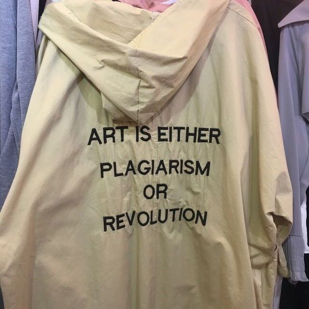

|
Information literacy is a crucial skill in the pursuit of knowledge.
It involves recognizing when information is needed and being able to efficiently locate,
accurately evaluate, effectively use, and clearly communicate information in various formats.
It refers to the ability to navigate the rapidly growing information environment,
which encompasses an increasing number of information suppliers as well as the amount supplied,
and includes bodies of professional literature, popular media, libraries, the Internet, and much more.
Increasingly, information is available in unfiltered formats, raising questions about its authenticity, validity, and reliability.
This abundance of information is of little help to those who have not learned how to use it effectively.
|
WHY DO WE NEED INFORMATION LITERACY?
In today's world, we consume tons of information every second.
We surf the Internet, get updates on our phones, read magazines and newspapers, and get bombarded with advertisements.
Plus, we are active readers for our jobs or education classes.
The idea behind engaging in understanding and using information literacy is that it allows us to become more informed
and promotes the idea of lifelong learning. When you have control over your own learning by being able to access information
on a given topic and incorporate it into your own knowledge, you are continually growing in your personal knowledge,
whether it be for educational or personal reasons.
|
PLAGIARISM

Many people think of plagiarism as copying another's work or borrowing someone else's original ideas.
But terms like "copying" and "borrowing" can disguise the seriousness of the offense. In other words, plagiarism is an act of fraud.
It involves both stealing someone else's work and lying about it afterward.
But can words and ideas really be stolen?
According to U.S. law, the answer is yes. The expression of original ideas is considered intellectual property and is protected by copyright laws,
just like original inventions. Almost all forms of expression fall under copyright protection as long as they are recorded in some way
(such as a book or a computer file).
All of the following are considered plagiarism:
*turning in someone else's work as your own
*copying words or ideas from someone else without giving credit
*failing to put a quotation in quotation marks
*giving incorrect information about the source of a quotation
*changing words but copying the sentence structure of a source without giving credit
*copying so many words or ideas from a source that it makes up the majority of your work, whether you give credit or not (see our section on "fair use" rules)
Most cases of plagiarism can be avoided, however, by citing sources.
Simply acknowledging that certain material has been borrowed and providing your audience with the information necessary
to find that source is usually enough to prevent plagiarism. See our section on citation for more information on how to cite sources properly.
|